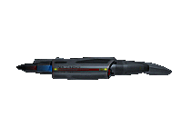

Sisko, Benjamin


Year of birth: 2332
Place of birth: New Orleans, Earth
Parents: Mr. and Mrs. Joseph Sisko (update: born to Sarah, Joseph's first wife [d. 2336])
Education: Starfleet Academy, 2350-54
Marital status: Married to Kasidy Yates 2375; previously married to Jennifer Sisko (d. 2367)
Children: One son, Jake, born 2355; wife pregnant with second child as of 2375
Current status: MISSING IN ACTION, 2375 (last known whereabouts: Bajor)
Final rank: Captain
Final assignment: Commanding Officer, Deep Space Nine, U.S.S. DEFIANT
**Includes summary updates through SD 52999 (2375); updated addenda pending Starfleet
Career Summary
Prior? Assigned to U.S.S. Livingston and, under Capt. Leyton, promoted to lieutenant commander and first officer of U.S.S. Okinawa.
2367 ? As lieutenant commander and first officer of U.S.S. Saratoga, survived ship's loss against Borg at Battle of Wolf 359; assigned to Utopia Planetia Shipyards on Mars and oversaw development of Defiant-class warship, which was later mothballed.
2369 ? Led Starfleet contingent on Bajoran-owned Deep Space Nine; helped discover Bajoran wormhole, made first contact with its builders, the nonlinear "Prophets."
2370 ? Made first contact with the Jem'Hadar and Dominion in Gamma Quadrant.
2371 ? Given command of experimental U.S.S. Defiant to beef up DS9 defenses; later promoted to captain. 2372 ? Temporary assignment, Chief of Starfleet Security on Earth.
2373 ? Caused postponement of Bajoran admission into UFP based on visions he claimed to receive from "Prophet" aliens; forged Federation-Klingon alliance to fight Dominion; deployed minefield at wormhole to prevent incursion of Dominion reinforcements; subsequently led evacuation of Starfleet personnel from DS9 while under Dominion attack, allowing control of station to revert back to Cardassian leadership; commanded Defiant during several months of front-line fighting.
2374 ? Promoted to Admiral William Ross' strategy adjutant after successful infiltration mission in Dominion space; led task force to recapture Deep Space Nine and prevented passage of Dominion reinforcements through wormhole, apparently due to his relationship with "Prophets"; involved in persuading Romulan Empire to join Alliance; awarded Christopher Pike Medal of Valor by Adm. Ross; led invasion force to liberate Chin'toka System from Dominion; took indefinite leave of absence to mourn death of Jadzia Dax and for personal reflection.
2375 ? Returned to duty on Deep Space Nine after three-month leave; commanded Defiant in Chin'toka battle against Breen, but forced to abandon ship upon its destruction; assigned command of U.S.S. Sao Paulo, subsequently renamed Defiant; with Adm. Ross and Chancellor Martok, led offensive against Cardassia which ultimately effected surrender of Dominion and end of war; last seen travelling alone to Bajor reportedly to "fulfill his destiny" abandoned runabout was found in orbit over Bajor, but body was never located. (Wife reported being contacted by Sisko in a vision, claiming he had "joined the Prophets" and would return at some unknown time.)
Kira Nerys
Year of birth: 2343
Place of birth: Dahkur Province, Bajor
Marital status: Single
Rank: Colonel, Bajoran Militia
Current assignment: Commanding officer, Deep Space Nine; previously, Bajoran liaison officer and first officer, Deep Space Nine
Security clearance: Grade H-1, Bajoran Intelligence Net
Database priority code: Alpha-1, Bajoran Central Archives
Worf
Date of birth: Earth equivalent: Dec. 9, 2340
Last Starfleet Rank: Lieutenant Commander
Current position:
- Strategic Operations Officer, Deep Space Nine
- First Officer, U.S.S. DEFIANT
Parents: Son of Mogh; foster parents Sergey and Helena Rozhenko
Education: Starfleet Academy, 2357-61
Marital status: Widowed: married to Jadzia Dax, 51247.5 (died 2374)
Children: One son, Alexander, born 43rd day of Maktag (Earth equivalent 2366)
**Includes summary updates, addenda through SD 52999 (2375)
Starfleet Career Summary
2364 ? As lieutenant j.g. in command division, assigned to U.S.S. Enterprise as relief con and tactical officer under Capt. Jean-Luc Picard, later made acting security chief.
2365 ? Promoted to lieutenant, named permanent Enterprise security chief.
2367 ? Resigned Starfleet commission to fight in Klingon civil war.
2368 ? Starfleet commission reactivated, no change in rank.
2371 ? Promoted to lieutenant commander. Took detached leave from Enterprise after loss of vessel.
2372 ? Transferred to command division for assignment on Deep Space Nine under Capt. Benjamin Sisko.
2373 ? On detached leave in command of U.S.S. Defiant and on service with Sovereign-class U.S.S. Enterprise, helped repel Borg temporal invasion. During mission to Gamma Quadrant, captured by Dominion and held captive on Jem'Hadar internment camp until successful escape. Assigned to serve aboard I.K.S. Rotarran under command of General Martok during Dominion occupation of DS9.
2374 ? Resumed service on DS9 under Capt. Sisko. Dispatched on mission to rendezvous with Cardassian operative/defector Glinn Lasaran, but abandoned mission to save wife, receiving serious reprimand in service record. Served aboard Defiant during Chin'toka offensive.
2375 ? Commanded U.S.S. Defiant for three months during Capt. Sisko's absence. Served as first officer during successful Klingon mission to destroy Dominion shipyard at Monac. Commanded I.K.S. Koraga when ambushed by Dominion patrol near Badlands, forcing evacuation; ultimately rescued by Ezri Dax, but then captured by Breen and held captive by Dominion for execution until released by Cardassian resistance. Defeated Klingon Chancellor Gowron in challenge to death; handed over chancellorship to General Martok. Served as tactical officer aboard U.S.S. Defiant during final battle of Dominion war. Accepted position as Federation Ambassador to Qo'noS.
Dax, Ezri

Rank: Lieutenant junior grade
Current assignment: Station Counselor, Deep Space Nine
Year of birth: ca. 2354
Place of birth: Trill (grew up in Sappora system)
Parents: Yanas Tigan, mother (no record of father's name)
Education: Starfleet Academy, Medical Program, 2372-2374 (final year of training waived)
Marital status: Single
2374 - Assigned to U.S.S. Destiny for field training, with title of assistant ship's counselor. Joined to Dax symbiont during medical emergency. Took leave of absence to recuperate.
Bashir, Julian, M.D.
Year of birth: 2341
Parents: Richard and Amsha Bashir
Education: Starfleet Academy and Medical School, 2359-2369
Rank: Lieutenant
Current assignment: Chief Medical Officer, Deep Space Nine
Marital status: Single
Office: Infirmary, DS9 Promenade
Note: Illegal genetic status discovered by Dr. Lewis Zimmerman, but allowed to retain Starfleet commission in father's plea bargain arrangement with Rear Admiral Bennett, Judge Advocate General.
O'Brien, Miles Edward
Rank: Chief petty officer, senior chief specialist
Current assignment: Professor of Engineering, Starfleet Academy; previously, Chief of Operations, Deep Space Nine
Year of birth: September, 2328
Place of birth: Killarney, Ireland, Earth
Parents: Mr. and Mrs. Michael O'Brien (mother died 2368; father remarried 2369)
Marital status: Married Keiko Ishikawa in 2367 in Ten-Forward, U.S.S. Enterprise
Children: One daughter, Molly, born 2368; a son, Kirayoshi, born 2373
Odo
Position: Security chief, Bajoran Militia, DS9 detachment
Species: Founder Changeling
Date of birth: Discovered ca. 2337 in Denorious Belt, Bajoran system
Place of birth: Founders Homeworld, Dominion, Gamma Quadrant
Education: Bajoran Institute for Science, as specimen: 2356-63
Office: Security Office, Promenade